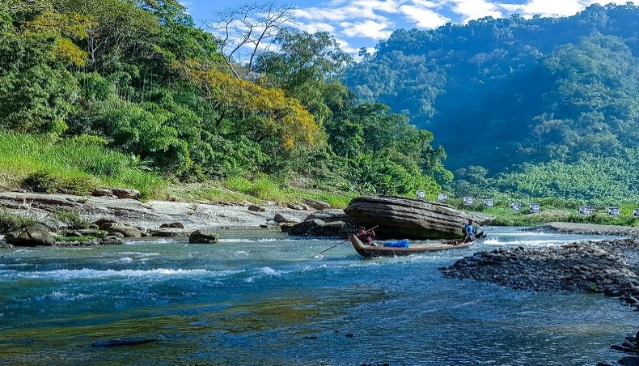

Tourists Places in Bandarban


According to the 2022 Census of Bangladesh, Bandarban District had 106,167 households and a population of 481,109, 40.4% of whom lived in urban areas. The population density was 107 people per km2. The literacy rate (age 7 and over) was 63.4%, compared to the national average of 74.7% Tribal Mro people holding traditional pipes in their hands, Bandarban (1950) As per the 2011 census, there were 215,934 Bengalis and 142,401 (36.67%) indigenous people in the district. There are more than fifteen ethnic minorities living in the district besides the Bengalis, including: Marma, who are Arakanese descendants or Rakhine and are also known as Magh, Mru (also known as Mro or Murong), Bawm, Khyang, Tripura (also known as Tipra or Tipperah), Lushei (also known as Lushei), Khumi, Chak, Kuki, Chakma and Tanchangya (also spelt as Tenchungya). Tribal children The Mru, also known as Murong, who are famous for their music and dance. The Mru in major numbers have converted to the youngest religion in Bangladesh Khrama (or Crama) a religion that prohibits much of their old ways. They are proposed as the original inhabitants of Bandarban.